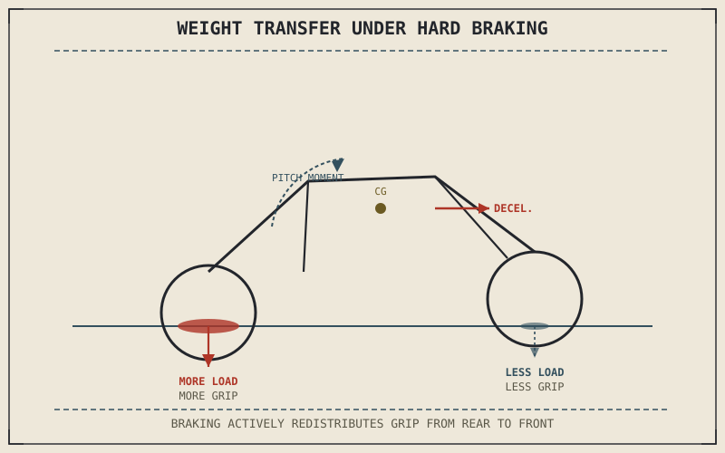

Under hard braking, a motorcycle's front suspension can compress dramatically while the rear nearly unloads — sometimes enough to lift the rear wheel off the ground entirely in an extreme stop. Nothing mechanical breaks or malfunctions to cause this; it's a direct, predictable consequence of physics that this chapter can calculate precisely, and understanding it explains almost everything about how braking force should actually be split between the two wheels.
Chapter 7.4 closed by promising an explanation of how available grip at each wheel changes in real time as a motorcycle brakes. This chapter is that explanation.
Why Braking Shifts Weight Forward
A motorcycle's center of gravity sits above the ground, and deceleration acts like a backward-pointing force applied at that height, creating a pitching moment that tries to rotate the whole motorcycle forward around its front contact patch — the harder the braking, the stronger that moment. This is a direct consequence of the same load-transfer physics that governs any object decelerating while its mass is distributed above its base of support; a motorcycle simply has a comparatively high center of gravity and a short wheelbase, which is exactly why the effect is so visible and so significant compared to a car braking under similar deceleration.
More Load, More Grip — At the Front
As weight transfers forward, the front tyre's vertical load increases, which Chapter 6.4 already established increases the total grip available at that contact patch — more load presses the tyre harder into the road, expanding the friction circle's total radius at the front wheel. Simultaneously, the rear tyre's vertical load decreases by roughly the same amount weight transfer added to the front, shrinking the rear friction circle correspondingly. This is precisely why a motorcycle's front brake is capable of far more stopping force than the rear under hard braking: it isn't that the front brake is simply bigger or better, though Chapter 7.2 noted it often is, it's that weight transfer is actively feeding the front tyre more grip to work with while taking grip away from the rear at the same moment.
Hard braking doesn't just slow a motorcycle down — it actively redistributes the grip available at each wheel, giving the front tyre more to work with and leaving the rear tyre with less, in direct proportion to how hard the brakes are applied.

A motorcycle shown braking hard, with a pitching moment arrow rotating weight forward, the front suspension compressed and its contact patch enlarged with more available grip, and the rear suspension extended with a smaller, lighter-loaded contact patch.
The Limit: Stoppies and Rear-Wheel Lift
Push braking force hard enough, and weight transfer can reduce the rear tyre's load to essentially zero, lifting the rear wheel off the ground entirely — the maneuver commonly called a stoppie. Beyond this point, applying more rear brake does nothing useful at all, since a wheel with no load against the road can't generate any braking force regardless of how hard it's squeezed; all remaining stopping capability lives entirely at the front tyre. This is also the physical ceiling on how much total braking force is available at all, connecting directly back to Chapter 7.1's point that braking is fundamentally limited by tyre grip rather than brake system capability — here, that limit is actively shifting in real time as the stop progresses.
A Common Misconception, Cleared Up Early
It's a common assumption that braking force should be split evenly, or close to it, between front and rear — treating each wheel as contributing roughly half the job the way each wheel might share cornering load. Weight transfer makes this assumption wrong for anything beyond gentle braking: the front tyre gains grip precisely as the rear loses it, so an even split leaves front-tyre grip unused while risking rear-wheel lock, since the rear now has far less load and far less available grip than a 50-50 split assumes. The correct proportion isn't fixed at all — it shifts continuously with how hard the motorcycle is decelerating at that instant, which is exactly the subject Chapter 7.6 takes up next.
Where This Leads
Weight transfer explains why available grip shifts between front and rear as a motorcycle brakes. Chapter 7.6 turns that shifting grip into an actual answer: how brake force should be balanced between the two wheels, and how the hardware and rider technique both try to get that balance right.
Key Concepts to Remember
- Braking deceleration creates a forward pitching moment because the center of gravity sits above the ground, transferring load from the rear tyre to the front.
- More load on the front tyre expands its available friction circle, while reduced rear load shrinks the rear's — this is why the front brake can supply far more stopping force than the rear.
- Extreme weight transfer can unload the rear tyre entirely, lifting the rear wheel and leaving all remaining stopping capability at the front.
- Correct front-rear brake proportion isn't fixed — it shifts continuously with deceleration intensity as weight transfer changes the grip available at each wheel.
Cross-References
| ← Ch. 7.4 | Closed by promising an explanation of how grip changes at each wheel during braking; this chapter delivers that explanation through weight transfer. |
| ← Ch. 6.4 | Established that vertical load expands a tyre's available friction circle; this chapter applies that relationship to the front and rear tyres under braking. |
| ← Ch. 7.1 | Established that braking is limited by tyre grip rather than brake hardware; this chapter shows that limit shifting in real time as weight transfers. |
| → Ch. 7.6 | Covers front-rear brake balance directly, turning this chapter's shifting grip into an actual proportioning answer. |